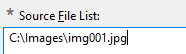
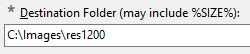
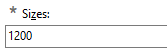
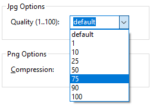
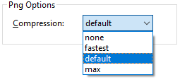

Overview
Image Resize is a program for bulk resizing and watermarking of JPEG and PNG images.
Contents
BasicsSource File List
Destination Folder
Sizes
Quality
Renaming
Watermark
Boost
Saving and Loading
Commandline Parameters
Watermark Editor
Capabilities
- resamples a list of files
- resamples each image to a list of sizes
- uses Lanczos filtering
- optional watermark printing
- accepts .jpg and .png files
- controls compression qualities
- GUI, CLI and API interfaces available
- systematic file renaming
Incapabilites
- stretching
- format conversion (JPEG remains JPEG and PNG remains PNG)
- preview
- meta information handling (EXIF)
Basics
The program needs at least these informations to work:
- A source filename or a list
 - A destination folder
 - A destination size or a list of destination sizes

Finally press to start the resampling.
Source File List
Image Resize can resample a list of source files. The list consists of path/filenames and can be entered
- manually, each line a file
- by browsing a folder with

- dragging files from the explorer into the window
The list can contain JPEG files and PNG files. The filenames can be retained or renamed. Relative pathes are based on the programs working directory.
ContentsDestination Folder
A destination folder is required. You can enter it manually or browse it with
If you enter multiple destination sizes, you can enter the placeholder %SIZE% into the path, where Image Resize will insert the size in pixels. If multiple sizes are entered and the placeholder is missing, you will get a warning.
ContentsSizes
A size in pixels refers to the longer side of the resized image. Usually the source size is larger than the destination size.
Image Resize can create mutliple resolutions for each source file. Enter
a list of sizes just by appending the additional sizes with commas.

You can enter all sizes you want greater than 0. The buttons beneath the list are common suggestions.
Change the list manually, by pressing the suggested size buttons or with the clear button . To remove a single size, double-click the size and press the clear button, or press the associated suggestion button again.
ContentsQuality
You can control the degree of compression for the JPEG format and for the PNG format.
For JPEG encoded files a better quality results in larger files and lower
compression of the destination files. 75 to 90 percent are good choices.

In the case of PNG files there are 4 compression degrees possible -
none, fastest, default and maximum. The quality of the
resulting file is always the same, because PNG compression is lossless.
The drawback of a maximum compression is the decoders decompression effort.

Renaming
Renaming of the destination image files becomes interesting, if its not your strategy to create folder for each destination image size.
Strategy 1: Usually Image Resize can keep the filenames, because for each size a different folder will be created.
Startegy 2: Put all destination images into the same folder and avoid filename conflicts by appending the size in the filename. This is achieved by creating a template filename, which contains placeholders for certain parameters. The program forms the new filename by replacing the placeholders.
Strategy 1 - Simple Filename Template
The simple filename template forms filenames like this: img085.jpg. The files are numbered beginning with 1 and they dont contain the image size. Thus its required to create a folder for each size. You will have to insert the placeholder %SIZE% in the folder.
The simple filename template is img%INDEX:1,3%.%FILEEXT%. The INDEX is the zero-based current number of the source image in the list. The numbers 1 and 3 behind the keyword INDEX mean, that the index counting starts with 1 and the number will have 3 digits with leading zeroes.
Startegy 2 - Advanced Filename Template
The advanced filename template img%INDEX:1,3%_%SIZE%.%FILEEXT% enables you to create all files in the same directory. It create a filename like img085_1920.jpg. The filename conflict is solved by using the %SIZE%-placeholder.
Custom Filename Templates
To let the program form a destination filename, you can enter a template of your own. The template contains placeholders for special values, which will be known while processing an beeing inserted.
Examples for valid templates for the case where all resulting images filenames with different sizes will not collide in the same directory may look like this:
img%INDEX:1,3%_%SIZE%.%FILEEXT%
%FILENAME%_%SIZE%.%FILEEXT%
Available Placeholders
| %FILENAME% | This is the original filename without the path and without the file extension |
| %FILEEXT% | The original filenames extension without the dot Note: You cant change the image files format just by changing all filename extension to .jpg or so. This may confuse image viewers. Its mandatory to use the original filenames extension. |
| %INDEX:N,D% |
The 0-based index (current number) of the file in the list.
N is an offset. A series usually begins with one, but for
adding images to existing lists it may be usefull the enter another
start-index of the new files. D is the number of digits of
the number. Note: the parameters N and D are not available for the %SIZE% placeholder. |
| %SIZE% | The destination size in pixels of the current image |
Watermark
A watermark is a semi-transparent small image, that adds a copyright note or whatever to your images. The image must exsist as a PNG file and can have an alpha channel, which means transparency. When printing the image an additional transparency can be entered. 20 to 30 percent is good for a discrete appearance, from 50% above the watermark becomes more visible.
Enabled
Check this check box to enable watermark printing.
Filename
Enter or browse a PNG file which will be scaled and printed to all destination images.
Usually you have to create only one watermark file for all the destination images sizes, because the size is in percent and the watermark will be stretched to the right size. So its ok to create a watermark file with a high resolution, lets say 400px width.
There is a way to assign a different watermark image for each size. For this case, enter the placeholder %SIZE% into the watermark filename. You must have prepared a watermark file for each size.
You can create a watermark image with every program that supports then PNG image format. Some suggestions:
- Inkscape - a free vector graphic editor
- Gimp - a free raster graphic editor
- Greenfish Icon Editor - a raster images graphic editor
- with the inbuilt Watermark Editor
You can use transparency, but keep in mind, that Image Resize allows an overall opacity, so you dont have to consider the printing transparency.
Its a good idea to have any glow, shadow or outline effect for a better
contrast on dark and bright backgrounds:
Size
The watermarks size is the width in percent of the destination image. I prefer a size of 400px.
Opacity
An opacity of 0% makes the watermark invisible, an opacity of 100% makes it fully opaque. A value of 40% is a good choice.
| 10% | 20% | ||
| 30% |  |
40% |  |
| 50% |  |
60% |  |
| 70% | 80% |  | |
| 90% |  |
100% |  |
Horizontal Position
The watermarks position is in percent of the horizontal space. If the X-size
is 10%, the image is 640px width, the watermark has a size of 20% then the
position is 10% * (640px - 20% * 640px) = 51px from the left. 50% means a
horizontal centered position.
0% means a left aligned position.
50% means a horizontally centered position.
100% means a right aligned watermark.
Vertical Position
The watermarks position is in percent of the vertical space.
0% means a top aligned position.
50% means a vertically centered position.
100% means a bottom aligned watermark.
Boost
Threads
Image Resize can utilize the computers full processor power through a thread pooling system. Single means, only one core is used for resampling. You can enter up to the number of the available cores (just enter maximum) to use the full computers power.
In systems with hyper-threading the number of "cores" is the double of the physical cores. Hyper-threading doesnt really accelerate the processing here. If you have 12 cores (6 real cores, 2 threads per core), then using 12 threads instead of 6 increases the performance by only about 8%.
Stop on Error
This option enables an immediate stop, when an error occures. Otherwise only the current task (task = single resampling) is cancelled.
ContentsSaving and Loading .irs Files
.irs files (Image Resize Settings) are simple text based INI-files. They contain all settings you can see in the main dialog except the Boost-Settings.
Because Image Resize stores all current visible settings in the registry, the program doesnt query for saving unsaved settings.
ContentsCommandline Parameters
filename.irs
You can let Image Resize load an .irs file on start by entering a filename as parameter.
-A or -AUTOSTART
Lets Image Resize auto-press the Execute-Button automatically on starting.
-X or -AUTOEXIT
Lets Image Resize close after running the conversion process automatically.
ContentsWatermark Editor
With you can open the inbuilt watermark editor. This simple dialog lets you design a single text line with a glow effect and colors of your choice.
Show the dialog

| Load new favorite settings. | |
| Save the current settings as a favorite, which can be loaded later. | |
| Load a previous saved .was file with watermark settings. | |
| Save the current watermark image as a PNG file and the settings to the same folder and with the sdame name but with .was file extension. | |
| Size | Enter the width of the watermark image in pixels. The image will be printed independently from this size with the layouts size setting in percent. Here you enter the resolution of the images. 200px or 400px is a good choice. |
| Text | Enter a line of text to this field. Enter the © character with <ALT> <0> <1> <6> <9> or with the button. |
| Font | Enter a font name in quotes and optionally the styles italic and bold or select a font with the dialog . Note: some fonts may not render with the right size. I did not find out the reason. |
| Color | Select a character color (foreground) |
| Shadow | Select a shadow color (background glowing) |
| Blur | Select a shadow blur in pixel. 6 is a good choice, depending on the width. |
| Ok | In order to use an edited watermark, you have to save it first or loaded one from a file. Then the Ok-button will be enabled. |
| Cancel | Closes the dialog without using the last filename. |